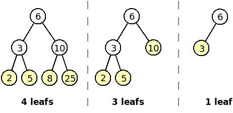

In this
problem, you should only submit a file named pi070.c containing
a line with #include "binaryTree.h" and the implementation of the
functions numberLeafs and numberTLeafs as described below
(a complete program is not required). Check code at the end and
explanation on how to compile.
You may assume that on Mooshak you will have access to the binary tree
implementation code (binaryTree.h and binaryTree.c) as
provided in class.
int numberLeafs(BTNode *n)
Recursive auxiliary function that returns the number of leaf nodes
in the subtree rooted at n. A leaf is a node with no children
(both left and right are NULL).
int numberTLeafs(BTree *t)
Wrapper function that calls numberLeafs on the root of
tree t and returns the result.
For instance, the trees below have respectively 4, 3 and 1 leafs (shown in yellow):

| Call | Result |
|---|---|
numberTLeafs(6 3 2 N N 5 N N 10 8 N N 25 N N) |
4 |
numberTLeafs(6 3 2 N N 5 N N 10 N N) |
3 |
numberTLeafs(6 3 N N N) |
1 |
To compile locally you will need the following files:
binaryTree.h and binaryTree.c — binary tree
implementation. The type NodeInfo is set to int.pi070.c — your code with the required functions.test070.c — file with the main() function handling
input reading and output printing.To compile, run in the folder where the files are located:
gcc test070.c binaryTree.c pi070.c, which will generate an
executable a.out.
Test code, file: test070.c
// PI070 Testing
#include <stdio.h>
#include "binaryTree.h"
int main(void) {
int n;
scanf("%d", &n);
for (int i = 0; i < n; i++) {
BTree t;
readTree(&t);
printf("numberLeafs(t) = %d\n", numberTLeafs(&t));
freeTree(t.root);
}
return 0;
}
Neste problema
deverá apenas submeter um ficheiro pi070.c contendo uma linha
com #include "binaryTree.h" e a implementação das funções
numberLeafs e numberTLeafs como a seguir descrito (não é
necessário um programa completo). Veja o código no final, bem como como
compilar.
Pode assumir que terá acesso no Mooshak ao código de implementação da
árvore binária (binaryTree.h e binaryTree.c) como
fornecido nas aulas.
int numberLeafs(BTNode *n)
Função auxiliar recursiva que devolve o número de nós folha na
subárvore com raiz em n. Uma folha é um nó sem filhos
(tanto left como right são NULL).
int numberTLeafs(BTree *t)
Função wrapper que chama numberLeafs na raiz da árvore
t e devolve o resultado.
Por exemplo, as árvores abaixo têm respectivamente 4, 3 e 1 folhas (assinaladas a amarelo):
| Chamada | Resultado |
|---|---|
numberTLeafs(6 3 2 N N 5 N N 10 8 N N 25 N N) |
4 |
numberTLeafs(6 3 2 N N 5 N N 10 N N) |
3 |
numberTLeafs(6 3 N N N) |
1 |
Para compilar localmente vai precisar de ter os seguintes ficheiros:
binaryTree.h e binaryTree.c — implementação da
árvore binária. O tipo NodeInfo está configurado para
int.pi070.c — o seu código com as funções pedidas.test070.c — ficheiro com a função main() que trata
da leitura e escrita.Para compilar execute na pasta onde estão os ficheiros:
gcc test070.c binaryTree.c pi070.c, que vai gerar um executável
a.out.
Código para testes, ficheiro: test070.c
// PI070 Testes
#include <stdio.h>
#include "binaryTree.h"
int main(void) {
int n;
scanf("%d", &n);
for (int i = 0; i < n; i++) {
BTree t;
readTree(&t);
printf("numberLeafs(t) = %d\n", numberTLeafs(&t));
freeTree(t.root);
}
return 0;
}
Algoritmos e Estruturas de Dados — Exercícios de Programação
DCC/FCUP - Faculdade de Ciências da Universidade do Porto
Content by Fernando Silva and Vanessa Silva (DCC/FCUP), copied from the original website.